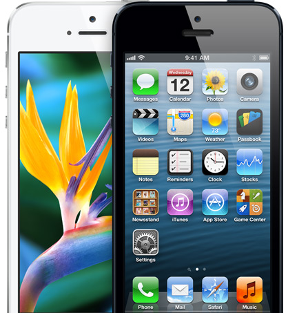

When introducing the iPhone 4, Steve Jobs said the magic number for a Retina Display is about 300 PPI for a device held 10 to 12 inches from the eye. One way of expressing this as a unit is Pixels Per Degree (PPD) which takes into account both the screen resolution and the distance from which the device is viewed. Based on Jobs' magic number of 300, the threshold for a Retina Display starts at a PPD value of 53.  53 PPD means that a tall skinny triangle with a height equal to the viewing distance and a top angle of one degree will have a base on the device's screen that covers 53 pixels. Any display's viewing quality (from phone displays to huge projectors) can be described with this size-independent universal parameter. Note that the PPD parameter is not an intrinsic parameter of the display itself, unlike absolute pixel resolution (e.g. 1024 x 800 pixels) or relative pixel density (e.g. 72 PPI), but is dependent on the distance between the display and the eye of the person (or lens of the device) viewing the display; moving the eye closer to the display reduces the PPD, and moving away from it increases the PPD in proportion to the distance. It can be calculated by multiplying the distance to the screen times the resolution of the screen in pixels per unit length times twice the Tan of π divided by 360 (equal to half a degree in radians). Remember to use units, whether imperial or metric, consistently in applying this formula. If the distance to the screen is measured in inches, then the resolution of the screen must be in PPI. If the distance to the screen is measured in centimetres, the resolution of the screen must be in PPC. Two times the Tan of π divided by 360 can also be approximated with π divided by 180 (= 0.01745).